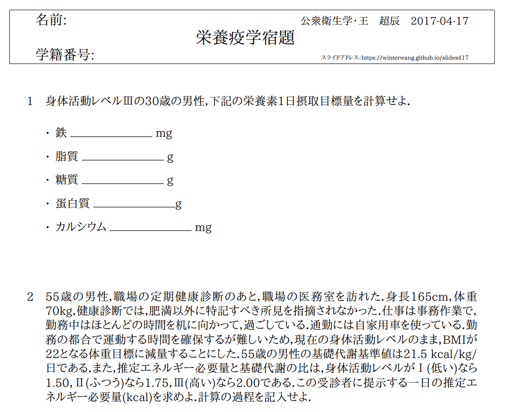

- 医学部の栄養学講義についての調査

- 「生活習慣病の増加に伴い，必要性が高まっている」
- 「食事療法を指導する上では必須」
- 「患者さんから食事関係の質問が多い」というものがあった．
王 超辰 | Chaochen Wang
https://winterwang.github.io/slides417
食は生命なり
「食事を通して栄養学を日々の暮らしに根付かせることが，人々の健康な生活につながる」

国試105G8 栄養素とその欠乏によって起こる病態との組み合わせで正しいのはどれか．


歯肉は 歯根のあたりまで腐り，頬は硬く腫れ上がって，ぐらつく歯は今にも抜けそうになる．...... 息は臭く，足には力が入らず，体のいたるところが疼き，青や赤のあざができる．

環境と食事という変数を変えてみただけ
人数はわずかだが，結果は明白
リンドは，ビタミン C の存在すら知らなかった
医療においては，治療の有効性を示すことが最優先


食欲不振があり，他に全身がだるく，とくに下半身に倦怠感が生まれる．足のしびれやむくみ，動悸，息切れ，感覚が麻痺するなどの症状があらわれます．さらに進行すると手足に力が入らず寝たきりとなり，そのまま放置すると心不全を起こして死に至ることもある． 膝の下を叩いても足が跳ね上がらない．
高木兼寛は脚気を撲滅したが，真の原因 ビタミンB$_1$の存在すら知らなかった．
南極大陸に世界の著名な栄養学者の名前を冠した7つの岬がある．一つは，高木岬である． 高木の業績を世界は認めている．

国試100G63: 三大栄養素の過剰摂取が関係するのはどれか．
三大栄養素は，蛋白質，脂質，炭水化物（糖）であり，主栄養素(macronutrient)とも呼ばれる．


Aune, D. et al. Int J Epidemiol (2017).

| 関連の強さ | リスクを下げるもの | リスクを上げるもの |
|---|---|---|
| 確実 (convincing) |
身体活動（結腸） | 過体重と肥満（食道，結腸，直腸，乳房（閉経後），子宮，腎臓）;飲酒（口腔，咽頭，喉頭，食道，肝臓，乳房）;アフラトキシン（肝臓）;中国式塩蔵魚（鼻咽頭） |
| 可能性大 (Probable) |
野菜・果物（口腔，食道，胃，結腸，直腸）;身体活動（乳房） | 貯蔵肉（結腸，直腸）;塩蔵品および食塩（胃）;熱い 飲食物（口腔， 咽頭，食道） |
| 可能性あり/データ不十分 (Possible/Insufficient) |
食物繊維 大豆 魚 \(\omega\)-3 系脂肪酸，カロテノイド，ビタミンB2，B6，葉酸，B12，C，D，Eカルシウム，亜鉛，セレン，非栄養性植物機能成分（例：アリウム化合物，フラボノイド，イソフラボン，リグナン） | 動物性脂肪，ヘテロサイクリックアミン，多環芳香族炭化水素，ニトロソ化合物 |

| 調査法 | メリット | デメリット |
|---|---|---|
| 陰膳法 (duplicate method) |
・記憶に依存しない ・食品成分表の精度に依存しない |
・負担が大きい ・食事が通常と異なる ・手間と費用がかかる |
| 食事記録法 (diet record) |
・記憶に依存しない | ・負担が大きい ・食事が通常と異なる |
| 24時間食事思い出し法 (diet recall) |
・負担が小さい | ・記憶に依存する |
| 食物摂取頻度調査法 (food frequency method) |
・簡単 ・時間と労力が少ない |
・結果は限られる |


国試108E7: 食事バランスガイドのイラストを次に示す．説明として，適切なのはどれか？

R version 3.3.3 (2017-03-06) • Google Terms of Use • Documentation and Data Policy
R version 3.3.3 (2017-03-06) • Google Terms of Use • Documentation and Data Policy
R version 3.3.3 (2017-03-06) • Google Terms of Use • Documentation and Data Policy
R version 3.3.3 (2017-03-06) • Google Terms of Use • Documentation and Data Policy
国民の健康の保持・増進を図る上で摂取することが望ましいエネルギーと栄養素の量の基準を示すものである．
健康な個人並びに健康な人を中心として構成されている集団
| 目的 | 種類 |
|---|---|
| 摂取不足の回避 | 推定平均必要量(EAR)，推奨量(DRA) \(\divideontimes\) 推定できない場合の代替指標：目安量(AI) |
| 過剰摂取による健康障害の回避 | 耐用上限量 (UL) |
| 生活習慣病の予防 | 目標量 (DG) |
国試96G26:
日本人の食事摂取基準について誤っているのはどれか．
エネルギーの指標
体格: BMI: Body Mass Index = weight \(\div\) height\(^2\)
エネルギー摂取量・消費量のバランス（エネルギー収支バランス）の維持を示す指標として，「体格(BMI)」が採用された．
| 年齢（歳） | 目標とするBMI(kg/m\(^2\)) |
|---|---|
| 18~49 | 18.5~24.9 |
| 50~69 | 20.0~24.9 |
| 70以上 | 21.5~24.9 |
下図は｢食事摂取基準｣の各指標を理解するための模式図である．解説として正しいのはどれか，2つを選べ．

| ー | 個人 | 集団 |
|---|---|---|
| EAR | 摂取量がEAR以下の者は不足している確率が５０％以上；摂取量がEARより低くなるにつれて不足している確率が高くなっていく | 摂取量がEAR以下の者の割合は不足者の割合とほぼ一致する． |
| RDA | 摂取量がEAR以上となりRDAに近づくにつれて不足している確率は低くなりRDAになれば，不足している確率は低い(2.5％) | 用いない． |
| AI | 摂取量がAI以上の者は，不足している確率は非常に低い． | 集団における摂取量の中央値がAI以上の場合は不足者の割合は少ない．摂取量の中央値がAI未満の場合には判断できない． |
| UL | 摂取量がUL以上になり，高くなるにつれて，過剰摂取に由来する健康障害のリスクが高くなる． | 摂取量がULを上回っている者の割合は，過剰摂取による健康障害のリスクをもっている者の割合と一致する． |
| DG | 摂取量がDGに達しているか，示された範囲内にあれば，当該生活習慣病のリスクは低い． | DGに達していない者の割合は，当該生活習慣病のリスクが高い者の割合と一致する． |
| 年齢等 | 蛋白質 | 脂質 | 炭水化物 |
|---|---|---|---|
| 0~11（月） | ー | ー | ー |
| 1~17（歳） | 13~20 (16.5) | 20~30 (25) | 50~65 (57.5) |
| 18~69（歳） | 13~20 (16.5) | 20~30 (25) | 50~65 (57.5) |
| 70以上（歳） | 13~20 (16.5) | 20~30 (25) | 50~65 (57.5) |
R version 3.3.3 (2017-03-06) • Google Terms of Use • Documentation and Data Policy
| 性別 | 男性 | 女性 | ||||
|---|---|---|---|---|---|---|
| 身体活動レベル | 低い(Ⅰ) | 普通(Ⅱ) | 高い(Ⅲ) | 低い(Ⅰ) | 普通(Ⅱ) | 高い(Ⅲ) |
| 18〜29(歳) | 2,250 | 2,650 | 3,000 | 1,700 | 1,950 | 2,250 |
| 30〜49(歳) | 2,300 | 2,650 | 3,050 | 1,750 | 2,000 | 2,000 |
| 50〜69(歳) | 2,100 | 2,450 | 2,800 | 1,650 | 1,950 | 2,200 |
| 70以上(歳) | 1,850 | 2,200 | 2,500 | 1,450 | 1,700 | 2,000 |
Ⅰ:生活の大部分が座位で，静的な活動が中心
Ⅱ:座位中心の仕事だが，職場内での移動や立位での作業・接客等，あるいは通勤・買物・家事，軽いスポーツ等のいずれかを含む
Ⅲ:移動や立位の多い仕事への従事者．あるいは，スポーツなど余暇における活発な運動習慣をもっている
| 性別 | 男性 | 女性 | ||||
|---|---|---|---|---|---|---|
| 年齢 | 基礎代謝基準値 | 基準体重 | 基礎代謝量 ($kcal/$日) |
基礎代謝基準値 | 基準体重 | 基礎代謝量 ($kcal/$日) |
| 18〜29(歳) | 24.0 | 63.0 | 1,510 | 22.1 | 50.6 | 1,120 |
| 30〜49(歳) | 22.3 | 68.5 | 1,530 | 21.7 | 53.0 | 1,150 |
| 50〜69(歳) | 21.5 | 65.0 | 1,400 | 20.7 | 53.6 | 1,110 |
| 70以上(歳) | 21.5 | 59.7 | 1,280 | 20.7 | 49.0 | 1,010 |
\(基礎代謝量(kcal/日)=\\基礎代謝基準値(kcal/kg体重/日)\times 基準体重(kg)\)

